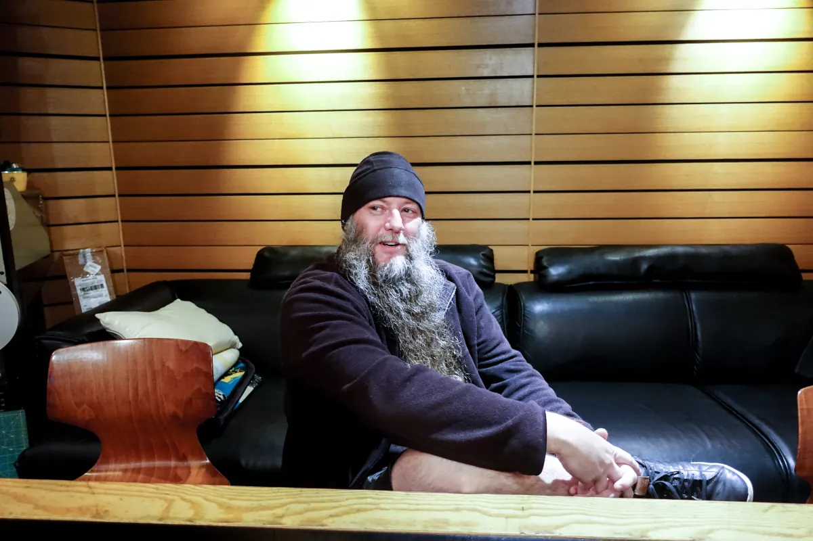
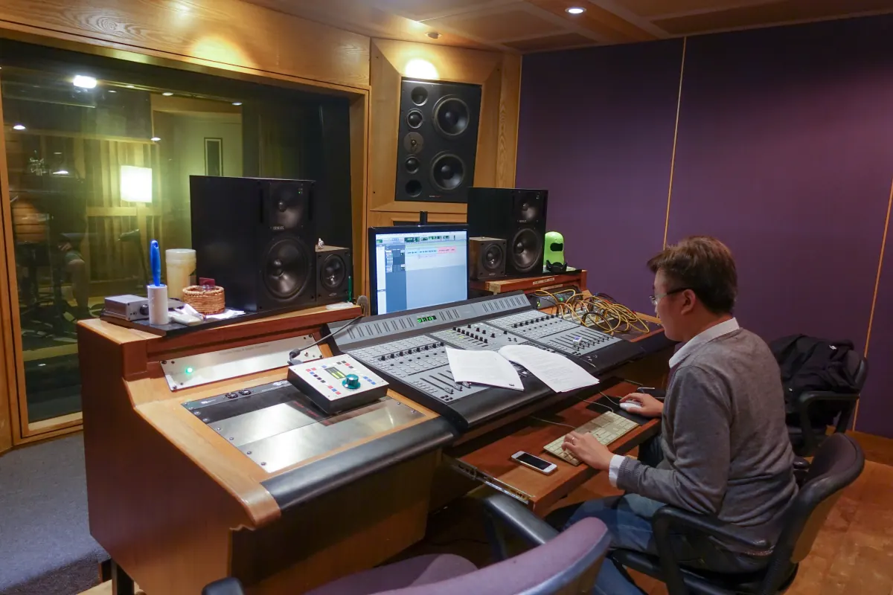
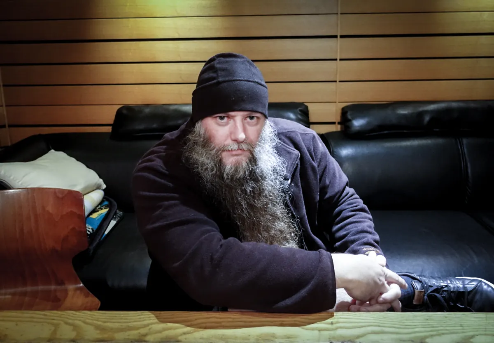

電視廣告的簡短口白、電影的預告片、紀錄片的旁白，大家是否曾想像過這些口齒清晰又能夠瞬間抓住你注意力的配音員，是怎麼辦到的嗎？配音員的工作內容又是怎麼樣的呢？
今天小編訪問到正在強力錄音室進行英語廣告錄音的資深配音員 – Kronis。來自加拿大的 Kronis，搬來台灣 22 年，從第一年就開始從事英語配音的工作 。近期 Kronis 最常錄製的案子包括電視廣告、企業簡介、產品介紹、網路影片、紀錄片旁白、政府單位簡介、網路遊戲和卡通的角色配音等。過去也曾錄過字典、英文教材、電影院的廣播、電梯廣播，甚至連放在玩具裡的 IC CHIP 都可聽見他的聲音。在累積了多年豐富的經驗後，Kronis 在業界可說是出了名的專業。任何需要英文配音的工作時，許多業界人士第一個想到的就是他。

Ｑ：Kronis的配音員背景與經驗？
Ａ：『我在加拿大的時候就開始做電台的 News and Sports Broadcasting（即時新聞與體育新聞廣播）。這段當電台新聞DJ的經驗鍛鍊了我速讀跟傳遞訊息的功力，同時又要兼顧實況轉播。這些經驗幫我在配音員的職涯發展上紮下了一個穩固的基礎。』
Ｑ：在台灣跟加拿大工作的最大差別？
Ａ：『在台灣，英文配音可以是一個專業領域，因為不是台灣的第一語言，加上沒有太多的競爭者。這點跟加拿大相較起來一定是一個優勢。有時候還是會有客戶想要特別錄外國人講中文的聲音（笑）。在台灣遇過的客戶都很友善，工作過程都很樂在其中。我相信這是很多外國人會喜歡台灣的原因之一。每次的工作都是一個新的冒險，你不太確定每次會遇到什麼樣的新事物或新挑戰，一起跟客戶溝通的過程都是好玩的。台灣很棒，錄音室STUDIO都很好、人也很友善、客戶也常常需要英文方面的幫助，我們也都很樂意協助順稿。』
Ｑ：Kronis 認為要成為一名專業配音員應該具備哪些關鍵的技能？
Ａ：『我覺得首先要看你是想要從事什麼方面的配音員。有戲劇、卡通、廣告等。如果你的音質很好，可以做一些例如紀錄片的旁白。之前有幸擔任 National Geographic 和 Discovery 的旁白。那些真的會偏有挑戰性，因為必須要 ”be conscientious” （認真謹慎）。無時無刻都要想著如何做得好、客戶想要什麼樣的感覺。客戶一定會有一個期望。大部分的時候透過溝通都可以找到客戶要的感覺。』
Ｑ：當接到一個新的配音案時，要如何找到最適合該案件的聲音樣貌？
Ａ：『有多年的經驗會有蠻大的幫助。現在通常可以在客戶告訴我要什麼感覺之前，只要拿到稿子我大概就知道那是什麼感覺了。如果客戶有想要其他感覺我們再一起調整，盡量達到他們的需求。這個過程是滿好玩的，就是在 fine-tuning （微調）到他們最想要的感覺。如果你很在意且喜歡你配音的工作，每次工作完若聽起來很好，客戶也很滿意，你就會覺得特別開心。我對那些去工作可是很討厭自己的工作的人感到蠻可惜的。我很喜歡這份工作，對這份工作很有熱忱。而且你不必整天在攝影機前，你只需要在麥克風前（笑）。對我來說當演員壓力跟挑戰都會更大。』

（圖：Kronis 在強力錄音室進行旁白錄音）Ｑ：平常在家會如何練習？
Ａ：『第一，閱讀！練習在讀出某一句話的同時，你已經開始在注意下一句了。光是這點就已經是一個技能了。有時候聽到一些不同的廣播人員講話的方式，我也會試著將那些方式融入到我的配音工作中。
第二，你必須要夠多元，可朔性高。多元是在台灣當英語配音員的一個很重要的一件事。不能只是朗讀稿子，要應映客戶的各種需求。所以我會不時的試著擴大我的淺能。在配音市場，每隔一段期間就會有一個趨勢。例如前陣子常遇到客戶想要聽起來自然一點的感覺。這些迎面而來的變化都是這份工作的挑戰和樂趣。
第三，也很重要的一點，就是保持健康！辦公室的工作可以感冒還繼續上班，但是配音員不行啊。沒有人想要鼻音很重的聲音。
通常在去錄音室前，客戶會提供稿子給我。我會在家裡先準備好，反覆練習幾次。
台灣有好多錄音室。從小到坐在錄音師旁邊錄的，到強力這樣兩層樓的專業錄音室都有，不過對配音員本身而言錄音室高級與否並沒有那麼重要。』
Ｑ：有什麼建議可以提供給想成為配音員的新鮮人？
Ａ：『Work on your delivery (練習傳達訊息的能力) 你需要讓自己在讀稿子的時候聽起來不像在讀稿。你要讓自己聽起來知道自己在講什麼，就算你不知道自己在講什麼，不然聽眾不會相信。
Be open-minded (保持開明豁達的心)，挑戰看看不同的配音工作。一定要踏出那一步試試。什麼專業都有很多的競爭。配音很好玩，但是也要夠專業跟有足夠的技能，就像任何其他的工作一樣。不管你的成就多高，都不要當一個自傲的人。謙虛、腳踏實地，大家也會比較喜歡跟這樣的人合作，一起工作起來也會比較開心。』

小編後記：
老家在加拿大 Winnipeg 的 Kronis 說，在家鄉的冬天可是冷到有負四十度呢。儘管錄音當天外面颳風下雨，如此寒冷的天氣，他今天竟然是穿著短褲騎車來的！他說他已經四年沒穿長褲了。別看照片中的 Kronis 穿著打扮看起來有點兇猛，從訪談中發現他是個幽默風趣的人，聊起天來總是面帶微笑，散發正面能量，但工作起來完全不失專業。只要站上錄音的位置立刻轉變成認真謹慎的專業配音員，與錄音師配合的步調也很熟練，總是能夠很有效率地完成工作。儘管已經是台灣業界有名氣的英語配音員，Kronis 非常謙虛，一直強調自己很幸運也很感謝所有在台灣遇到的機會，我想這也是許多跟他合作過的人還會想再次找他合作或推薦他的原因之一吧！